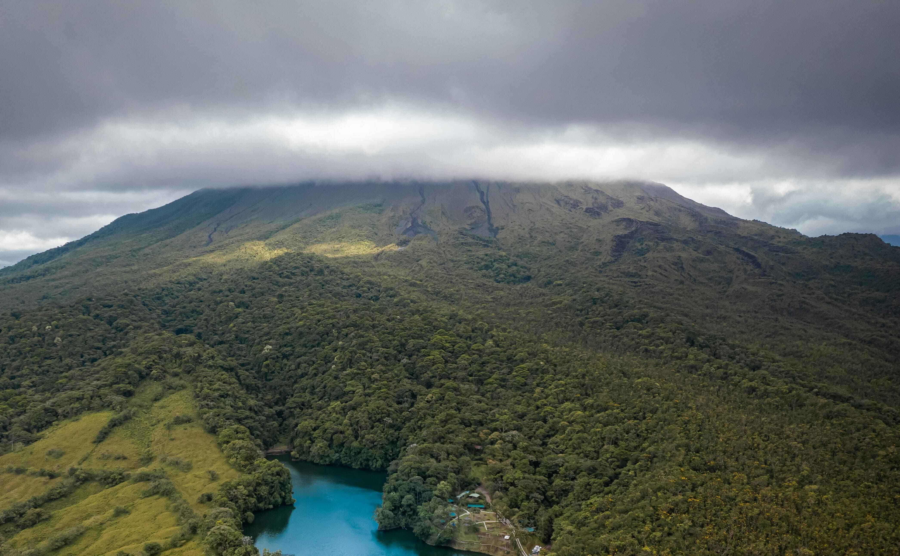
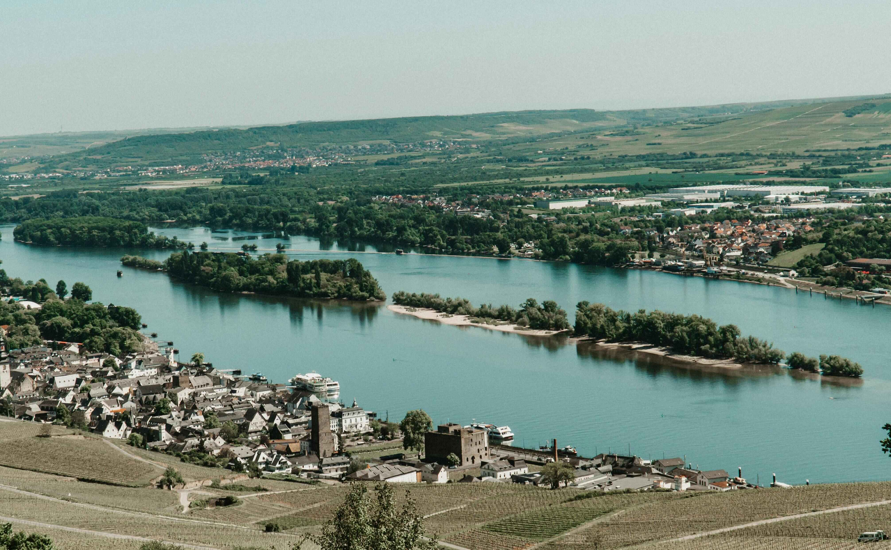

Costa Rica has been a global leader in carbon neutrality for the past seven
years. Since 2014, the country has generated over 98% of its electricity from renewable sources,
making it one of the greenest nations on the planet. In 2021, Costa Rica continued its efforts
to remain carbon neutral, aiming to produce over 99% of its energy from renewable resources.
This commitment showcases Costa Rica's dedication to sustainability and serves as an inspiring
model for other countries.

Germany's energy transition, known as the Energiewende, has transformed from a
grassroots movement into a national project with profound effects on society and business.
Germany aims to phase out coal by 2038, with new climate targets suggesting an even earlier
exit. Germany's goal is to power its industry, mobility, and
buildings almost entirely with renewables, proving that an industrialized nation can abandon
fossil fuels without sacrificing growth.